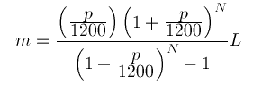

Mathematical notation and dataflow programming
Even though computations done on computers are very often based on some type of math, it is striking that the notation used in math to express equations and relations is not always very readily converted into programming code. Outside of purely symbolic programming languages like sage math or the (proprietary) Wolfram language , there seem to always be quite a divide between the mathematical notation and the numerical implementation.
I’m generelly interested in how we can go towards a more declarative way of specifying relations between entities, to minimize the amount of coding we have to do when modelling systems. I find it especially interesting with approaches that are easy to implement in mainstream programming environments, so that existing knowledge, third party library ecosystems and performance optimizations having gone into these systems can be re-used.
Optimal is if we can fluently convert such declarative coding approaches into dataflow -, or even flow-based programming programs, since these approaches are a pretty good fit for today’s multicore CPU chips, where the inherent pipeline parallelism makes good use of multiple computing cores without too much hoops, except we express the computations as pipelines of asynchronously running processing components.
Enter Go generator functions
Pondering the fact that Go’s concurrency primitives (go-routines and channels) combined into the generator pattern (see Rob Pike’s slides here ), is pretty much dataflow in a pretty functional style, it struck me that Go generator functions might be useful for expressing computation in a way that resembles mathematical equations.
If you haven’t seen Go generator functions, check the link above to Rob’s slides. Otherwise, in short, they are functions which, instead of returning a finished value, return a channel, from which one or more values can be retrieved. Internally, the generator function will start a go-routine which will produce the values for you lazily, or, concurrently while you read from the channel (or it might pre-compute some values if the channel is buffered).
Said and done. This turned out to be easier than expected. With the help of one or two helper functions, I could easily implement various numeric operators like “Add” and “Div” in the form of generator functions that operate on a stream of numbers, and in turn returns a stream of integers or numbers. Since the returned channel represents the output of each operator function, it becomes possible to nest these operator function calls in a way that somehow mimics a mathematical formula chosen to implement.
As example formula for my experiment, I wanted something with simple operators (mostly “Add”, “Sub”, “Mul” and “Div), but complex enough that it is relevant to make the formula as readable as possible. The monthly payment formula from this page seemed like a good fit:

It expresses what your monthly payment, m, will be, given that you borrow an amount L of dollars and pay it back over N months, with an annual interest rate of p percent.
With a few generator functions for division, addition, multiplication and exponentiation, we can now implement this formula as a nested tree of such generation functions. The formula expressed in this way looks like this:
// The formula
monthlyPaymentUSD := Mul(
Div(
Mul(
Div(Val(rate),
Val(1200.0)),
Exp(
Add(
Val(1.0),
Div(
Val(rate),
Val(1200.0))),
Val(months))),
Sub(
Exp(
Add(
Val(1.0),
Div(
Val(rate),
Val(1200.0))),
Val(months)),
Val(1.0))),
borrowedAmount)
As you can see, there are some peculiarities, like that we have to wrap constants in “Val()” functions, to make these values into a stream of their values, rather than just constants (since all of the generator functions take streams of values rather than pure values).
The full Go code can be found below, and in the bottom you will find the implementaiton of the operator functions, and the Val functions. In this example, they all build on the Apply2() function further below, which takes two input streams of values, and a function, and applies that function on the stream of values, returning a single stream of values. (For more complex functions, we might need Apply1, Apply3, etc):
package main
// Source code for this experiment: https://github.com/samuell/gormula
import (
"fmt"
"math"
)
func main() {
// --------------------------------------------------------------------------------
// Monthly Payment Formula
// --------------------------------------------------------------------------------
// Implementing the loan payments formula from here:
// http://www.math.utah.edu/~pa/math/equations/equations.html
// --------------------------------------------------------------------------------
// We try the formula over a sequence of values from 1000 to 10,000 USD
borrowedAmount := Seq(1000.0, 1000.0, 10000.0)
// Some initializations
rate := 2.0 // Percent
months := 24.0
// The formula
monthlyPaymentUSD := Mul(
Div(
Mul(
Div(Val(rate),
Val(1200.0)),
Exp(
Add(
Val(1.0),
Div(
Val(rate),
Val(1200.0))),
Val(months))),
Sub(
Exp(
Add(
Val(1.0),
Div(
Val(rate),
Val(1200.0))),
Val(months)),
Val(1.0))),
borrowedAmount)
// Print out all the resulting monthly payments:
borrowedAmountForPrint := Seq(1000.0, 100.0, 10000.0)
for monthPay := range monthlyPaymentUSD {
borrowed := <-borrowedAmountForPrint
fmt.Printf("Monthly payment for 24 months, when borrowing %.2f USD: %.2f USD\n", borrowed, monthPay)
}
}
// --------------------------------------------------------------------------------
// Components
// --------------------------------------------------------------------------------
type valstream chan float64
func Add(x valstream, y valstream) valstream {
return Apply2(func(x float64, y float64) float64 { return x + y }, x, y)
}
func Sub(x valstream, y valstream) valstream {
return Apply2(func(x float64, y float64) float64 { return x - y }, x, y)
}
func Mul(x valstream, y valstream) valstream {
return Apply2(func(x float64, y float64) float64 { return x * y }, x, y)
}
func Div(x valstream, y valstream) valstream {
return Apply2(func(x float64, y float64) float64 { return x / y }, x, y)
}
func Exp(x valstream, y valstream) valstream {
return Apply2(func(x float64, y float64) float64 { return math.Pow(x, y) }, x, y)
}
func Apply2(fn func(x float64, y float64) float64, xs valstream, ys valstream) valstream {
zs := make(valstream)
go func() {
defer close(zs)
for x := range xs {
y := <-ys
zs <- fn(x, y)
}
}()
return zs
}
func Val(x float64) valstream {
xs := make(valstream)
go func() {
defer close(xs)
for i := 0; i < 10; i++ {
xs <- x
}
}()
return xs
}
func Seq(start float64, step float64, end float64) valstream {
res := make(valstream)
go func() {
defer close(res)
val := start
for (end + val - val) > 0.001 { // Same as val <= end, but take care of propagating float errors
res <- val
val = val + step
}
}()
return res
}
You can view and run an experiment demonstrating this on the go playground .
Limitations and concluding remarks
So, as you see, it is indeed possible to express dataflow computations in a quite an equation-centric way in Go.
Now, there are some limits to this approach. For example, we have had to decide in which direction the computation goes: From inputs to outputs. Perhaps it is possible to express this in a more generic way, since Go channels are after all bi-directional, unless they are explicitly made uni-directional?
We also get into territory where Go’s lack of generics is giving some consequences. In order to keep the above code example reasonably short, we have limited outselves to streams of float values. Extending this to arbitrary combinations of floats, integers, and of all the sizes, would lead to quite an explosion in code duplication, and be far less fun to implement.
Anyways, hope this little experiement can spur some ideas on ways to merge declarative, relation-centric programming into mainstream programming environments.
Notes
- This post has been discussed in a thread on reddit